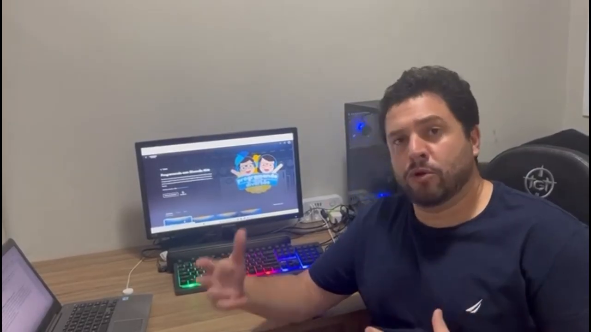
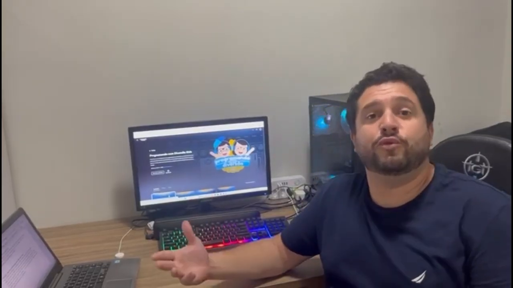
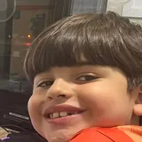
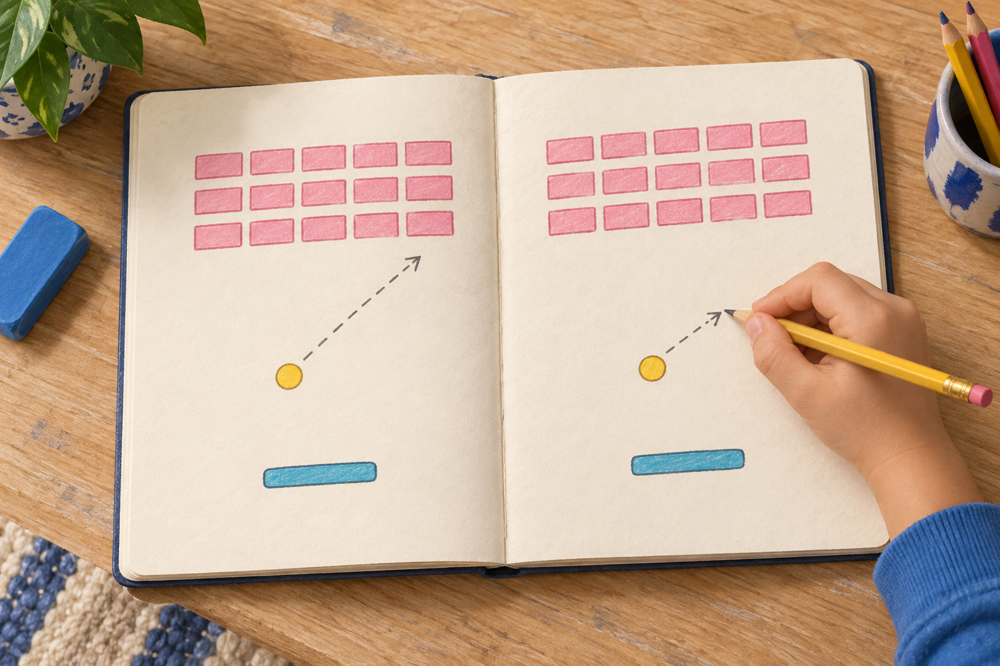
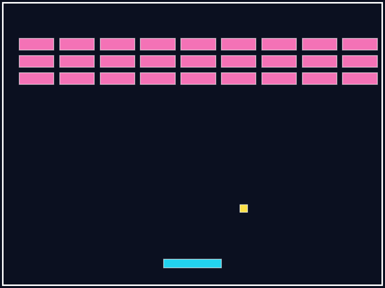
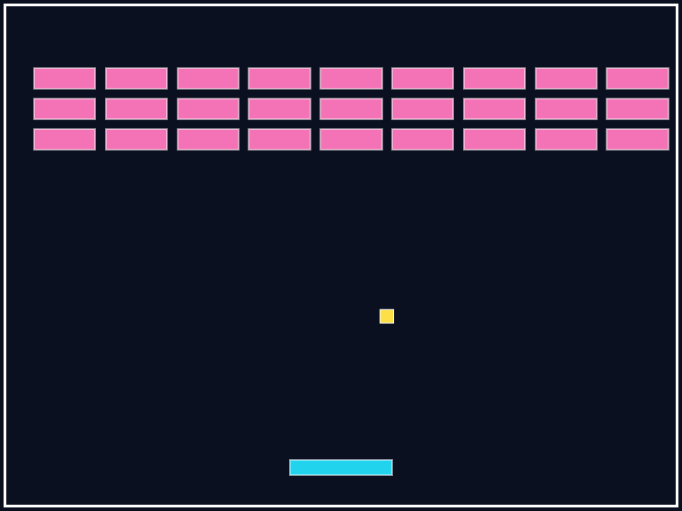

“Eu quero mudar isso aqui no jogo.”
A ideia veio dele.

Daniel, pai do Rafael, contando uma fala do filho.
A ideia veio dele.

Daniel, pai do Rafael, contando uma fala do filho.


Rafael · Aluno
O filho passou a propor o que gostaria de experimentar.
a criança pode transformar uma preferência em uma versão para testar.

Uma ideia para testar: deixar a bola mais devagar.
Velocidade original
Mais devagar


Mesmo tempo de movimento. O rastro mostra o caminho da bola.
Ela anda menos nesse tempo. Sobra mais tempo para mover a raquete.
Velocidade original
Mais devagar
Nesta versão, há mais tempo para mover a raquete.
Ficou fácil demais? Dá para testar outra velocidade.
Siga o perfil para conhecer esse caminho.